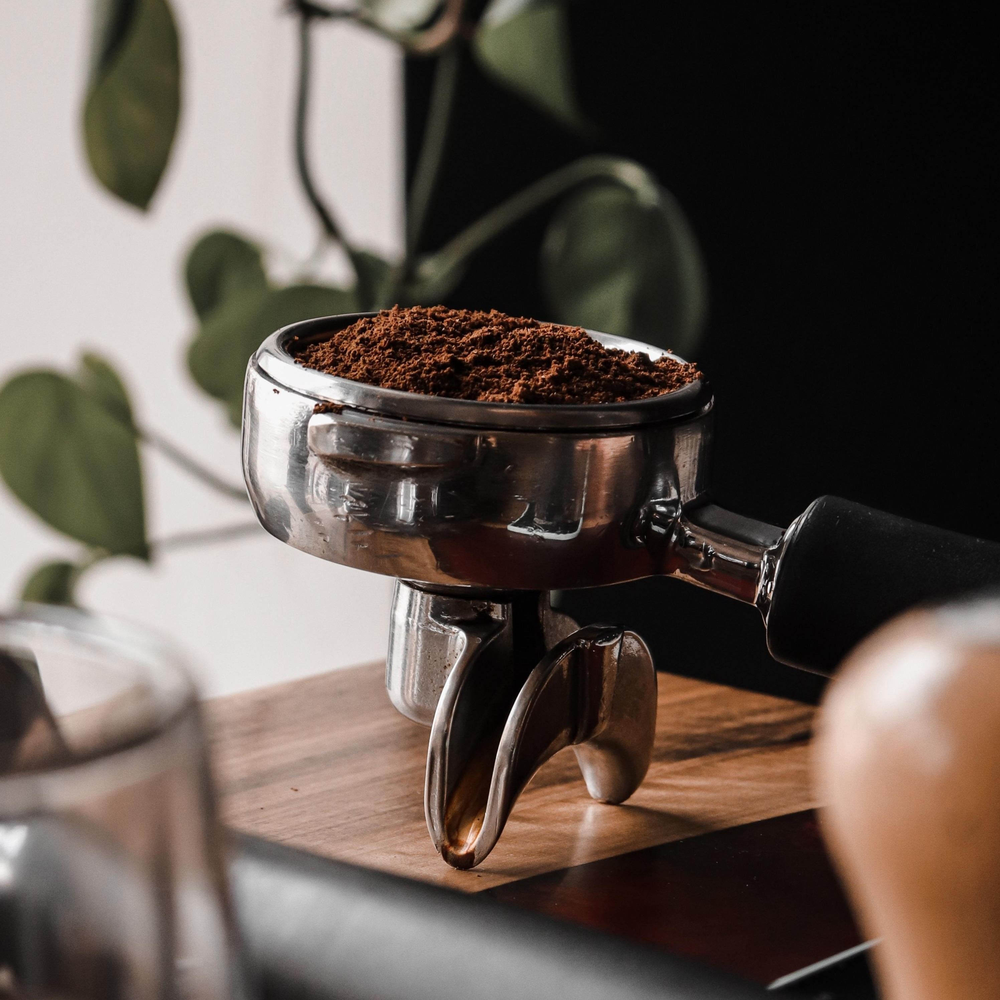
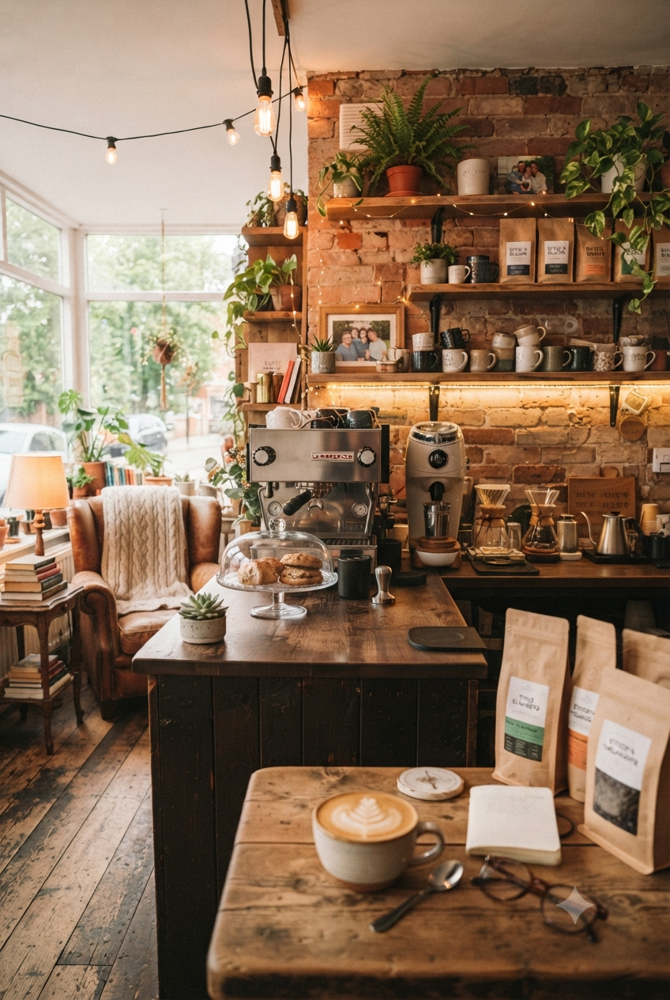

UM PROJETO FICTÍCIO, FEITO COM CARINHO
Um lugar para desacelerar e se sentir em casa.
A Pausa Café nasceu da ideia de que os melhores momentos podem começar com uma xícara de café. Imaginamos um espaço acolhedor, com receitas artesanais, conversas sem pressa e um cantinho para cada pausa do dia.
Voltar para Sobre
PEQUENOS DETALHES, BOAS MEMÓRIAS
Nosso universo
Uma pausa com propósito
Aqui, cada detalhe convida a ficar: café preparado na hora, doces feitos artesanalmente e um ambiente tranquilo para encontrar pessoas ou aproveitar um momento só seu.
O que você encontra por aqui
Cafés especiais · receitas artesanais · acolhimento

Esta página apresenta uma história conceitual e fictícia da Pausa Café.